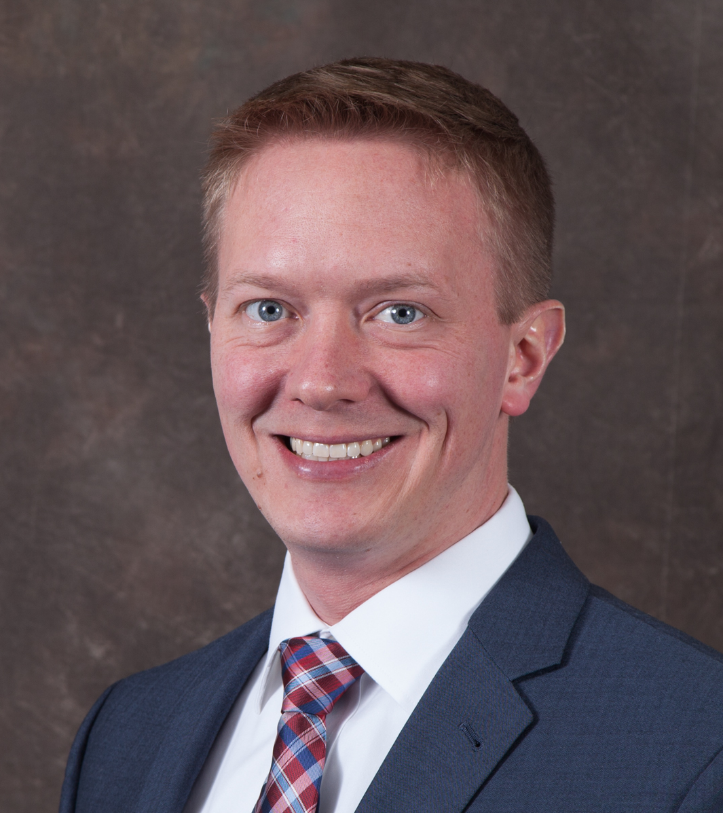
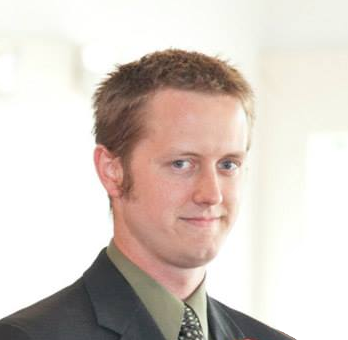

Mark Wernly

Mark Wernly is at Atlas Labs to engage clients and ensure a positive
customer experience. A husband of ten years and a father to three beautiful
daughters, Mark has an excellent track record of listening. Currently an M.B.A.
candidate at The William & Mary School of Business, Mark is quickly
establishing himself in private industry after serving the public for 12
years as a Navy Pilot. Comfortable working under pressure, Mark has the
ability to bring teams together even under the most stressful circumstances.
Jon Robison

Jon Robison is the brains of Atlas Labs. An experienced and accomplished
computer programmer, Jon has worked for Alion Science and Technology
developing large scale distributed training software for the military, worked
as a full stack engineer for Cox Media Group contributing to hundreds of websites.
As a freelance programmer Jon created programs that filled capability gaps at
nearby hospitals and medical schools. Atlas Labs was founded to bring his
proven software solutions to a national audience.
Contact us today to see how we can support your journey to a successful Magnet designation!